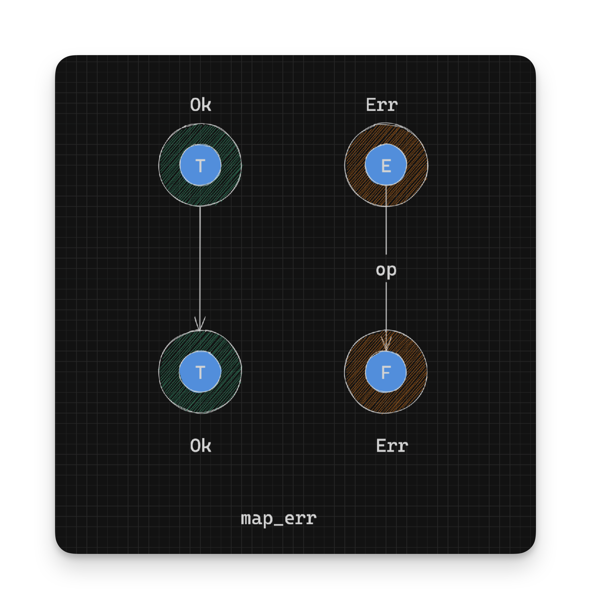
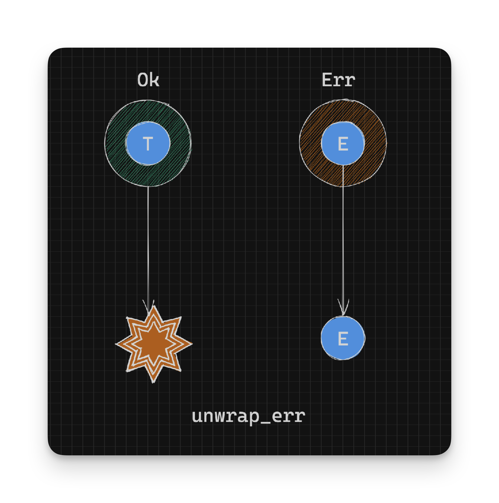

Working With Rust Result - Working with Errors - Part 10
The following functions help us work on the error side of a Result.
map_err
You often need to map the error type on Result to another. To do so we can use the map_err function:
pub fn map_err<F, O: FnOnce(E) -> F>(self, op: O) -> Result<T, F> {
match self {
Ok(t) => Ok(t),
Err(e) => Err(op(e)),
}
}In the definition above, the function op is run on the value inside the Err instance, and then wrapped back in an Err constructor. The Ok instance is not changed. This is similar to how the map function works but on the Err side.
In summary:
// pseudocode
// Given: Result<T, E>
// Return type: Result<T, F>
op: E -> F // Convert error value to an F
Err(e:E) -> op(e) -> F -> Err(F) // `Err` value type goes from `E` -> `F` and is wrapped in an `Err`
Ok(t:T) -> Ok(t) // `Ok` value type is fixed: `T`
Here’s an example where we need to convert a ParseBoolError type to MyError:
fn bool_as_my_error(value: &str) -> Result<bool, MyError> {
parse_bool(value)
.map_err(|e| MyError(e.to_string())) //Convert ParseBoolError -> MyError
}map_err is useful when you need to align all the error types to a single type like when using the question mark operator or
when using functions like and_then.
unwrap_err
unwrap_err gives you access to the error inside an Err instance and panics on an Ok instance. This is an unsafe function
and should be used only when you know for certain that you have an Err or don’t care (like maybe in a test, where you want the test to fail).
pub fn unwrap_err(self) -> E
where
T: fmt::Debug,
{
match self {
Ok(t) => unwrap_failed("called `Result::unwrap_err()` on an `Ok` value", &t),
Err(e) => e,
}
}In the definition above, the value inside the Err instance is returned and on an Ok instance the unwrap_failed function is called which leads to a panic. This is similar to the unwrap function but panicing on Ok instead of Err.
In summary:
// pseudocode
// Given: Result<T, E>
// Return type: E
Err(e:E) -> E // Returns the error value inside the Err
Ok(_) -> panic // Panics on any Ok value
For example, if we try to unwrap a success value:
parse_bool("true").unwrap_err() // panics - called `Result::unwrap_err()` on an `Ok` value: trueWhen used on an error:
parse_bool("ten").unwrap_err() // ParseBoolErrorexpect_err
expect_err is similar to unwrap_err where you get the value inside the Err instance or panic, but where you get to provide a custom error message.
expect_err is defined as:
pub fn expect_err(self, msg: &str) -> E
where
T: fmt::Debug,
{
match self {
Ok(t) => unwrap_failed(msg, &t),
Err(e) => e,
}
}In the definition above, the value inside the Err instance is returned and on an Ok instance the unwrap_failed function is called with the supplied msg which leads to a panic. This is similar to the expect function but panicing on Ok instead of Err.
In summary:
// pseudocode
// Given: Result<T, E>
// Return type: E
Err(e:E) -> E // Returns the error in the Err
Ok(_) -> panic // Panics on any Ok value with the supplied messageFor example, if we try to unwrap a success value:
parse_bool("true").expect_err("This should not be bool") // panics - This should not be bool: trueWhen used on an error:
parse_bool("ten").expect_err("This should not be bool") // ParseBoolError- Continue on to Conversion to Option
- Back to TOC